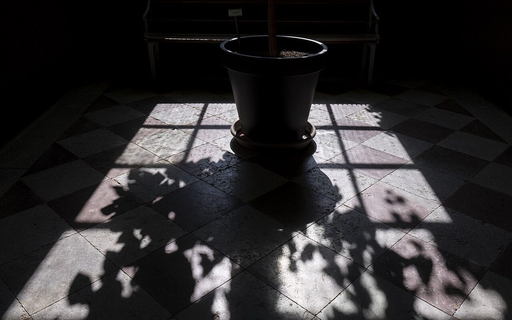
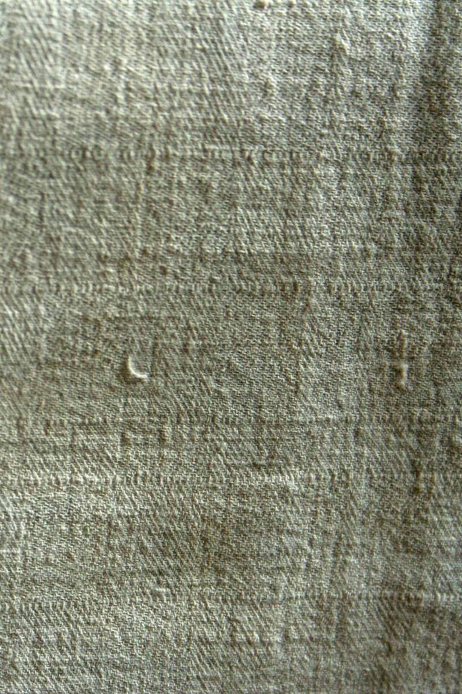
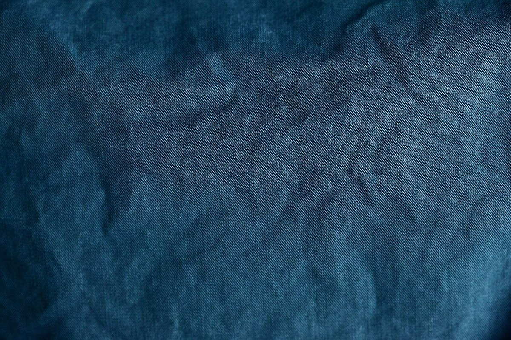
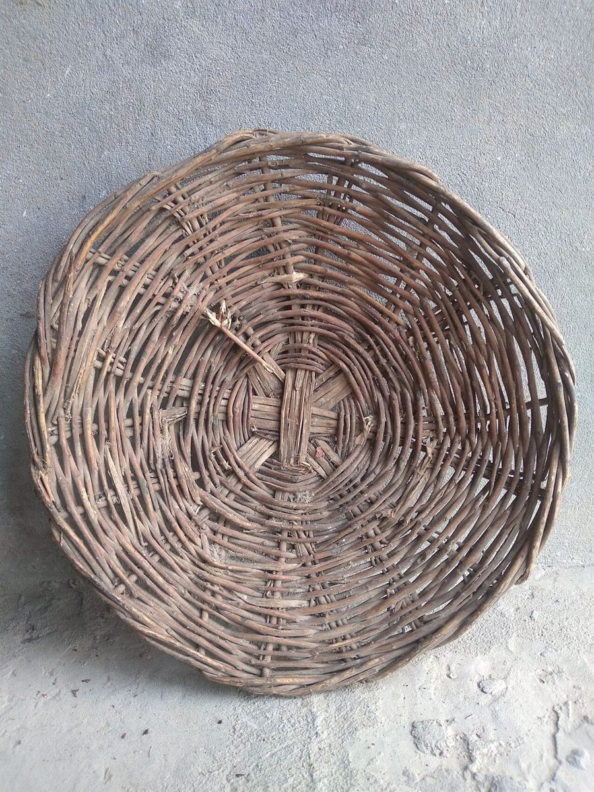
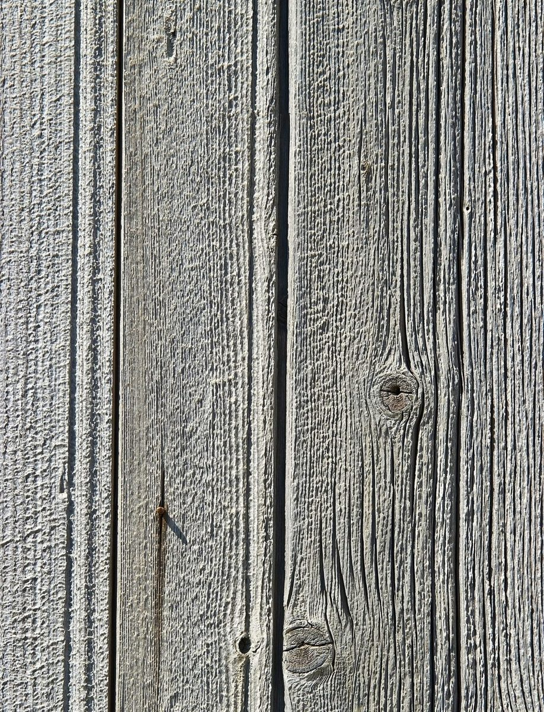

制作側の連想
「クロス」と「ba」から、織り目を思った。
屋号の由来は分かりません。制作側は「クロス(交差)」という響きから、縦糸と横糸が交わる織物を連想し、このページを「織り目帖」としてまとめました。長井市は置賜地方にあり、織物(紬)でも知られているとされますが、お店との関係は不明です。お店の理念や由来とは無関係な、制作側の連想です。
平織りの市松
写真と言葉を、交互に織る。
写真は長井市やお店のものではありません。布・編み目・光と影のイメージで選んだ、国外・撮影地不明のフリー素材です。

縦糸
所在地
山形県長井市本町2丁目2-14 クロスバ。

横糸
連絡
電話はなし。Instagramから。
縦糸
営業時間
準備中です。

横糸
メニュー
準備中です。


縦糸
ご予約
準備中です。

横糸
駐車場
準備中です。
ご案内
お店のこと(確認できたものだけ)
| 所在地 | 山形県長井市本町2丁目2-14 クロスバ |
|---|---|
| 電話 | なし |
| 営業時間 | 準備中 |
| 定休日 | 準備中 |
| ご予約 | 準備中 |
| 駐車場 | 準備中 |
| SNS | Instagram @rakumachi.nagai |